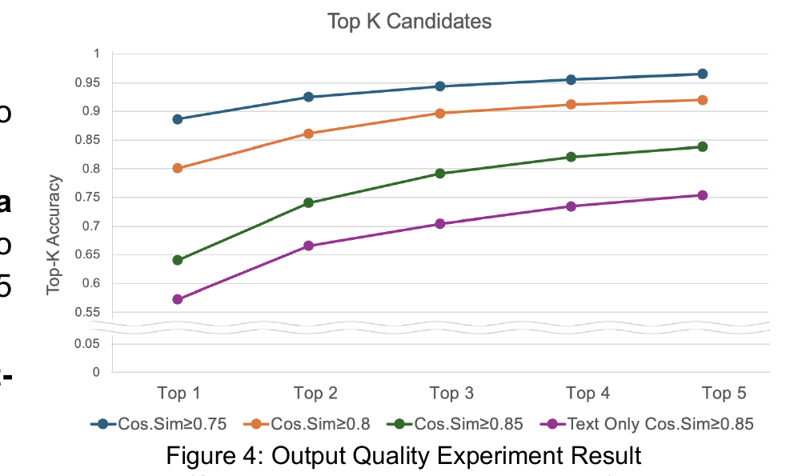
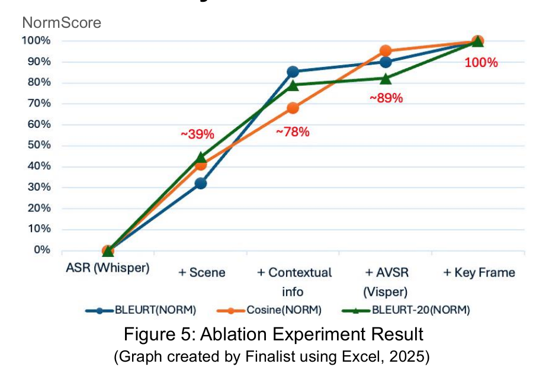
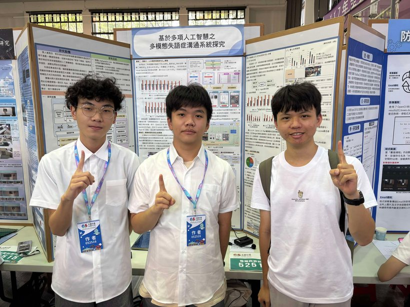
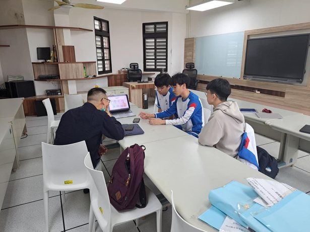

AphaSpeak — multimodal communication assistant for non-fluent aphasia
Two-person team · clinical input from neurologists · IRB-supervised hospital pilot in progress
The problem
People with Broca's or transcortical motor aphasia understand language but produce fragmented, error-filled speech. Text-only LLMs trained on clean text lack the cues to recover their intent, and traditional picture-card AAC tools are slow and need heavy training. The missing signal is everywhere except the transcript: lips, gestures, facial expression, the scene, and the conversation itself.
How it works
AphaSpeak runs on a phone and uses both cameras plus the microphone. Ambient audio and scene images build conversational context; the front camera feeds two parallel pipelines — a high-frequency one (ORB keyframe extraction → gesture and emotion classifiers) and a high-detail one (keyframes stitched into a film strip the LLM sees directly). Whisper and lip-based visual speech recognition (ViSpeR) cross-check each other on unclear phonemes. All features fuse into a prompt, and the model returns candidate sentences ranked by confidence for the user to pick and speak aloud.

What I built
- Post-training: designed a choice-filtered distillation recipe — inject the reference sentence into the candidate list, re-rank by semantic similarity, drop low-quality samples — then fine-tuned a 14B model with QLoRA. The student beats its Gemini 2.5 Flash teacher by ~4% on this task, enabling low-cost local deployment.
- Data augmentation: simulated aphasic speech by using attention scores to keep each sentence's semantic skeleton and degrade secondary words — much closer to clinical corpora than random masking.
- Systems: cut latency from 18s to under 4s with async WebSocket streaming, three-tier priority queues, multiprocessing around Python's GIL, and CTC greedy decoding with mixed precision on the AVSR path.
- Personalization: each user's pronunciation habits and history are injected as memory, so accuracy improves with use.
Results
Evaluated on Broca's and transcortical motor sessions from AphasiaBank (4,520 adapted sentences), using BLEURT and BERT cosine similarity. The full system reaches 0.91 cosine similarity — a 10% margin over a text-only LLM — and top-3 candidates cover 80% of intents, close to the top-5 ceiling of 84%. Ablations attribute 30–40% of the gain to contextual and scene information and ~25% to visual speech and expression cues. A Chinese-data test reaches 0.83 cosine similarity, showing cross-lingual headroom.



